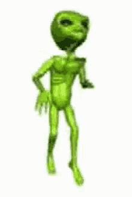
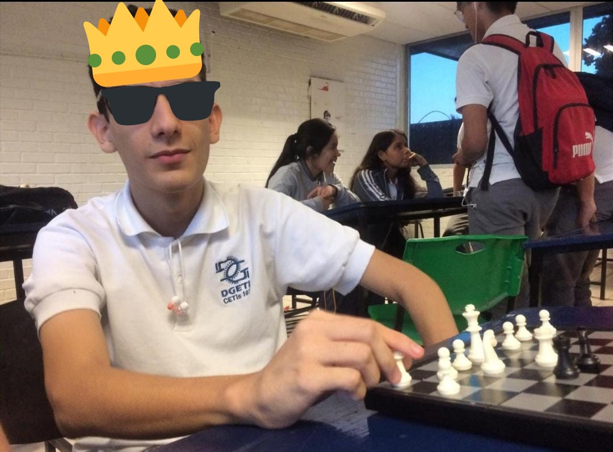

<#
EDGARDO
AJEDREZ
¿QUE ES?
El ajedrez es un deporte mental que tambien puede considerarse un juego, por cierto el juego mas viejo de toda la historia de la humanidad y en el que se requiere una capacidad del 3% del humano, casi llevando al humano al limite de su mente y llevando ala locura a muchas personas.
anuncios

La pieza poderosa:
la pieza mas poderosa en el tablero es la reyna, tambien conocida por gamborimbos como "dama", esta pieza es unica y si la pierdes mejor rindete crack ;).
La pieza importante::
El Rey se puede mover en cualquier dirección (vertical, horizontal y diagonales) avanzando o retrocediendo una sola casilla. tambien si pierdes lapieza perdiste el juego y por ultimo mas vale decri que esto es relleno para que la pagina se vea completa jajaja perdon profe

"JOVEN PROMESA"
El es edgar y es la promesa maxima del ajedrez, aunque no le valla bien con las chicas, es un crajc y el mejor tiene dos hijos que el año pasado pelearon por el torneo mundial sus nombres son magnus carlsen y fabiano caruana.Sin duda la maxima potencia en ajedrez en este unirveso ,talvez de esta galaxia misma llevadno encuentros contra extraterrestres.
"DR. ROMERO"
El es Romero Salazar, un veterano del ajedrez casi "leyenda", que murió muy joven a los 27 años aportando mucho al mundo del ajedrez con sus jugadas, celadas, aperturas, etc.